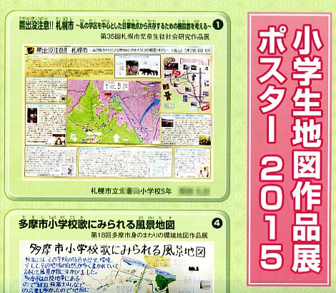
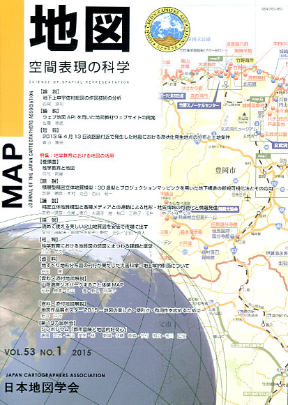
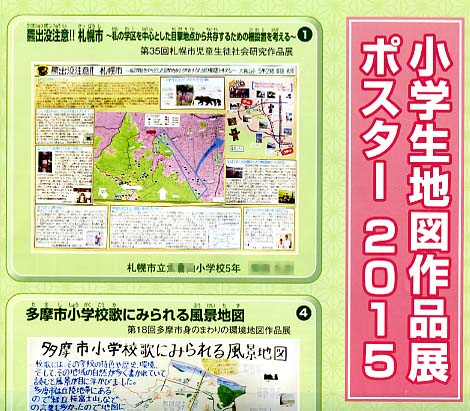

≪No.53 No.1 添付地図≫


本図を許可なく複製・利用することを禁止します。
| 最 新 号 | バックナンバー | 添付地図目録 | 投 稿 規 程 |
Vol.53 No.１ （通巻２０９号） ２０１５年 《特集：地学教育における地図の活用》
| 【論説】 | 地下上申宇佐村絵図の作図技術の分析 | 西尾良司 |
| キーワード：地下上申絵図、方位角、縮尺分母、相似三角形、作図技術 | ||
| 【論説】 | ウェブ地図APIを用いた地図教材ウェブサイトの開発 | 佐藤崇徳 |
| キーワード：地理教育、教材開発、ＧＩＳ、インターネット、地形図 | ||
| 【短報】 |
2013年4月13日淡路島付近で発生した地震における液状化発生地点の分布と土地条件 |
青山雅史 |
| キーワード：液状化、2013年4月13日淡路島付近の地震、土地条件、旧版地形図、淡路島 | ||
| 特集：地学教育における地図の活用 | ||
| 【巻頭言】 | 地学教育と地図 | 目代 邦康 |
| キーワード：地図教育、学校教育、生涯教育、地学、サイエンス・コミュニケーション | ||
| 【論説】 | 積層型精密立体地質模型：３Ｄ造型とプロジェクションマッピングを用いた地下構造の新規可視化法とその応用 | 芝原暁彦・木村克己・西山昭一 |
| キーワード：３Ｄプロッタ、３Ｄ造型、プロジェクションマッピング、地形図、地質図 | ||
| 【論説】 | 精密立体地質模型と各種メディアとの連動による地形・地質情報の可視化と情報発信 | 芝原暁彦・今尾恵介・大道寺覚・柚口三奈子・酒井 克・小林弘幸 |
| キーワード：三次元造型、プロジェクションマッピング、科学番組、教材 | ||
| 【論説】 | 読めて使える美しい火山地質図を安価で市場に出す | 早川由紀夫・萩原佐知子・野村正弘・小山真人 |
| キーワード：火山、地質図、浅間山、伊豆、放射能汚染 | ||
| 【短報】 | 地学教育における地質図の読図にまつわる課題と展望 | 川辺文久 |
| キーワード：地質図、判読、空間認識、時間軸 | ||
| 【資料】 | 地すべり地形分布図の刊行が果たした災害科学・地図学的側面について | 井口 隆 |
| キーワード：地すべり地形分布図、防災教育、災害、地図学、立体表現法、床地図 | ||
| 【資料・添付地図解説】 | 山陰海岸ジオパークまるごと体感ＭＡＰ | 松原典孝・先山 徹・新名阿津子 |
| キーワード：山陰海岸ジオパーク、ジオサイト、ＳＮＳ、地球科学、モデルコース | ||
| 【資料・添付地図解説】 | 地図作品展ポスター2015 −地図の楽しさ・便利さ・有用性を広めるために− | 新井洋行 |
| キーワード：地図作品展、手づくり地図、地図の楽しさ・便利さ・有用性 | ||
| 【第197回例会】 | シンポジウム「都市冒険と地図的好奇心」 | 遠藤宏之・高山英男・林 幹雄・伊藤香織・竹村和広・有川正俊 |
| 【書評・紹介】 | 中国地図測量史 | 齊藤忠光 |
| 【特別会員名簿】 | ||
| 【学会記事】 | ||
| 【添付地図】 | 山陰海岸ジオパークまるごと体感ＭＡＰ | |
| 地図作品展ポスター2015 | ||
|
≪No.53 No.1 表紙≫ |
|
|  |
|
|
|
≪No.53 No.1 添付地図≫ |
|
 本図を許可なく複製・利用することを禁止します。
|